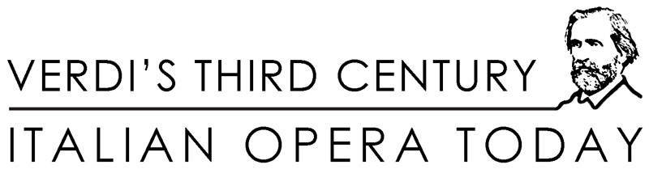

|
| A Bicentennial Conference • New York University October 9-13, 2013 • Casa Italiana Zerilli-Marimò and the Humanities Initiative The international conference Verdi's Third Century: Italian Opera Today has now officially ended. Scholars, practitioners, and critics gathered at New York University to explore the circulation and perception of Verdi—and of Italian opera—in today's world. Five intense and exciting days! Program and paper abstracts are now available for download (Adobe Reader required). The American Institute for Verdi Studies gratefully acknowledges the support for the conference provided by the following individuals and institutions: Casa Italiana Zerilli-Marimò, NYU
Center for European and Mediterranean Studies, NYU Department of Music, NYU Department of Music, University of Southampton Humanities Initiative, NYU Office of the Dean for the Humanities, NYU Stefano Albertini Asya Berger Cecilia Gobbi Kostja Kostic Pauline Lum Gwynneth C. Malin Julian Sachs Alberto Schileo Nancy Smith-Amer Jane Tylus Larry Wolff Lawren Young Baronessa Mariuccia Zerilli-Marimò Verdi's Third Century: Italian Opera Today was organized by the American Institute for Verdi Studies and hosted by two of NYU's key organizations: Casa Italiana Zerilli-Marimò and the Humanities Initiative. The program committee of Verdi's Third Century: Italian Opera Today included Suzanne Cusick (New York University), Francesco Izzo (University of Southampton and American Institute for Verdi Studies), Roberta M. Marvin (University of Iowa), Hilary Poriss (Northeastern University), Emilio Sala (University of Milan and Istituto Nazionale di Studi Verdiani), and Mary Ann Smart (University of California, Berkeley).
|